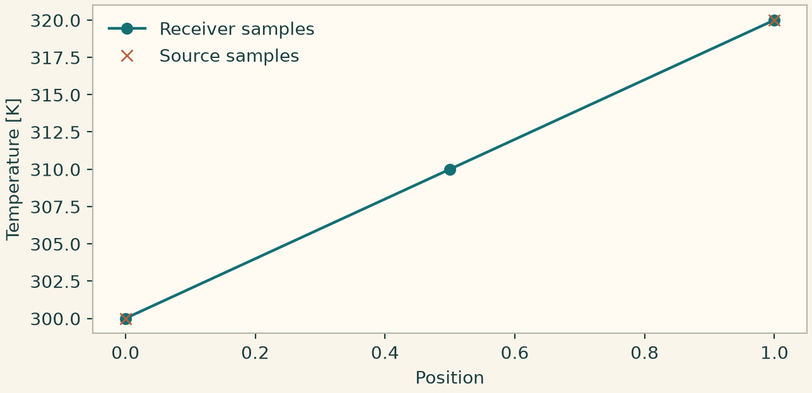

Docs › Guide
8 Solvers, time integration and coupled fields
8.1 Linear solvers and preconditioners
onesim.numerics.linear
Start with SparseDirect() for a moderate assembled real system and ComplexSparseDirect() for a complex one. Direct factorization can have substantial fill. Use ConjugateGradient only for an appropriate symmetric positive definite real operator or the supported Hermitian positive definite complex case, with a compatible preconditioner. A gauge, a Lagrange multiplier or a mixed pressure system can change definiteness. Use GMRES for a compatible nonsymmetric system, RightGMRES for fixed right preconditioning, and FlexibleGMRES when the right preconditioner varies during iteration. Set the solver's scalar type explicitly for phasors. Compare the physical residual and at least one field observable against a reference direct solve on a small mesh.
ILU is a sparse incomplete factorization with fill and drop controls. AlgebraicMultigrid accepts near-nullspace information where supported. BlockPreconditioner requires solvers and an owned degree-of-freedom partition for block sweeps. SchurPreconditioner uses a leading-block solve and a Schur solve or approximation. Use field-aware block order, including constraints. A smaller relative tolerance can expose an incorrect scaling or preconditioner, so also inspect absolute tolerance and iteration count.
from onesim.numerics.linear import GMRES, ILU
linear = GMRES(
preconditioner=ILU(fill_factor=2.0, drop_tolerance=1e-5),
relative_tolerance=1e-9, absolute_tolerance=1e-12,
maximum_iterations=500, restart=40,
)
# Pass linear as Numerics(linear_solver=linear, spatial=...),
# or to a nonlinear declaration that owns its inner solve.8.2 Nonlinear solvers
onesim.numerics.nonlinear
Newton uses a residual and the chosen Jacobian representation. DampedNewton adds a line search, TrustRegionNewton restricts the correction in solver coordinates, and QuasiNewton updates an approximate inverse after an initial solve. JFNK, also exported as JacobianFreeNewtonKrylov, needs an appropriate Krylov inner solve. Its Jacobian option selects the derivative route permitted by the binding, which can include a physical analytic action. A matrix-free operator and a preconditioner that requires an assembled matrix must be connected through a supported preconditioning representation. FixedPoint requires a supported fixed-point map and may need relaxation. Compare both residual reduction and changes in physical outputs. Field-specific Numerics(field_scales=...) and a physically meaningful initial_guess= can improve the interpretation of convergence where the binding supports them.
8.3 Time integration, events and continuation
onesim.numerics.time
Use ForwardEuler for a simple first-order reference and ClassicalRungeKutta4 for a higher-order explicit reference with four stages. For stiff dynamics, BackwardEuler supplies a first-order implicit step. BDF(order=2, startup=BackwardEuler()) adds multistep history. The generic BDF declaration accepts orders one through six, subject to the bound study and startup policy. Document the startup method and check the maximum step ratio for variable-step history. For conservation-law and diffusion problems use a step small enough for the advective, acoustic or diffusion restrictions on the chosen mesh.
TimeMethod(method_id) selects a catalog ID in compatible studies. The following table gives the generic object-state catalog in the inspected source. Array, DAE and partitioned execution can impose different restrictions. Attach the required stage solver only when consumed by the selected method.
| Stage solver | Method IDs | Selection notes |
|---|---|---|
| Explicit | forward_euler, ssprk2, classical_rk4, embedded_heun_euler | Single-step methods. Nominal orders are 1, 2, 4, and 2. |
| Explicit | adams_bashforth2, predictor_corrector_abam2, leapfrog | Second-order methods with history. Check stability and startup. |
| Nonlinear | backward_euler, theta_075, crank_nicolson, implicit_rk_midpoint, dirk_sdirk2, adams_moulton_2 | Single-step implicit methods. Backward Euler and the fixed \(\theta=0.75\) method are first order. The others are second order. |
| Nonlinear | adams_moulton_3, adams_moulton_4, bdf2_gear, bdf3_gear, bdf4_gear, bdf5_gear, bdf6_gear | Implicit multistep methods. The number gives the nominal order. |
| Linearized | rosenbrock_euler, rosenbrock_wanner_euler | First-order linearly implicit methods in this catalog. |
The following is a method substitution for a compatible lumped implicit study. Keep its physical declarations and mesh fixed and pass implicit as the new simulation's numerics. Compare with the explicit result at common output times.
from onesim.numerics import Numerics
from onesim.numerics.discretization import LumpedParameters
from onesim.numerics.linear import SparseDirect
from onesim.numerics.nonlinear import Newton
from onesim.numerics.time import BDF, BackwardEuler, TimeStepLimits
implicit = Numerics(
spatial=LumpedParameters(),
time_integrator=BDF(order=2, startup=BackwardEuler()),
nonlinear_solver=Newton(linear_solver=SparseDirect(), jacobian="analytic"),
step_limits=TimeStepLimits(maximum_step=0.02),
)Apply the declaration to the resistor–capacitor problem and compare with its closed form. Use the actual accepted time for the reference and re-run with a smaller step to assess temporal error.
import numpy as np
from onesim.cad.geometry import LumpedDomain
from onesim.meshing import LumpedMesh
from onesim.physics.systems import ResistorCapacitor
from onesim.simulation import Problem, Simulation
from onesim.simulation.initial_conditions import InitialValue
domain = LumpedDomain()
rc = ResistorCapacitor(
domain=domain.system, resistance=2.0, capacitance=0.5, supply_voltage=3.0,
)
problem = Problem(
name="Implicit RC step", geometry=domain, physics=(rc,),
initial_conditions=(InitialValue(rc.voltage, 0.0),),
)
sim = Simulation(problem=problem, mesh=LumpedMesh(domain), numerics=implicit)
sim.validate().require_valid()
result = sim.run(start_time=0.0, end_time=1.0, time_step=0.01)
t_final = float(result.times[-1])
value = np.asarray(result.field(rc.voltage).values).item()
assert np.isclose(t_final, 1.0)
assert abs(value - 3.0*(1 - np.exp(-t_final))) < 5e-4Pass AdaptiveTimeStep(initial=..., minimum=..., maximum=..., ...) as Simulation.run(time_step=...) when the method supports the adaptive controller. This sets the error tolerances and accepted-step range. TimeStepLimits independently sets an absolute maximum, a stability safety factor and a CFL limit. Monitor accepted times and rejections and tighten tolerances for a comparison. Align Output scheduling with the retained samples you intend to plot. TimeEventDefinition defines a scalar event on semantic states with crossing direction, terminal behavior and an optional reset. Use the typed FieldThreshold route for a supported field event. See test_declared_field_events.py and test_array_adaptive_time.py. Check a known event time on a small case and retain the checkpoint required by the selected continuation method.
8.4 Transfer between fields
onesim.numerics.field_transfer
A FieldCoupling(source=..., target=..., transfer=...) connects typed physical values and their numerical representations. Start by checking component count, units, ownership, and geometric overlap. Choose GlobalValueTransfer between global fields, GlobalBroadcastTransfer to drive a spatial field uniformly, and SpatialAverageTransfer to reduce a spatial field to its physically weighted average. FiniteElementEvaluation evaluates the source at points requested by the target, often quadrature points. CellToQuadratureProjection samples native cell data on the receiver quadrature. FieldInterpolation represents point interpolation on compatible supports. ElectricFieldToFaces serves electric transport at faces, with PeriodicPotentialTrace declaring the signed potential jump when needed. ConservativeVolumeTransfer integrates native scalar FE density over physical FV overlap volumes. Check the integrated total and domain coverage. Interpolation and conservation are distinct requirements.
For a two-way coupling, first run both sides separately, check each transfer on a constant field, then compare the driven result with a known spatial or global response. Keep source and receiver mesh IDs with exported data when meshes differ. The exposed operators namespace also provides explicit request, validation and application functions for provider-level transfers.
8.4.1 Validate and apply an explicit interpolation
Use this low-level route when you already own the source and target coordinates and the samples. For example, resample a one-dimensional temperature profile onto an output grid. A one-to-one field coupling inside a simulation can use a declaration such as FiniteElementEvaluation instead.
import numpy as np
from onesim.numerics.field_transfer import operators
mapping = operators.interpolation(
"temperature profile", "coarse", "display",
source_coordinates=(0.0, 1.0), target_coordinates=(0.0, 0.5, 1.0),
source_unit="K", target_unit="K",
)
values = np.array([300.0, 320.0])
report = operators.validate(mapping, source=values)
assert report.accepted, report.diagnostics
mapped = operators.apply(mapping, values)
np.testing.assert_allclose(mapped.value, [300.0, 310.0, 320.0])
print(mapped.report.mapping_kind)
import matplotlib.pyplot as plt
import onesimulation_plot_theme as theme
theme.use_theme()
fig, ax = plt.subplots(figsize=(6.6,3.2),layout="constrained")
ax.plot((0,.5,1),mapped.value,"o-",label="Receiver samples")
ax.plot((0,1),values,"x",markersize=7,label="Source samples")
ax.set(xlabel="Position",ylabel="Temperature [K]")
ax.legend(frameon=False)
plt.show()

The returned value is an array on the target layout. The report records the provider, support, unit scaling and conservation evidence. For piecewise-constant cell values use the corresponding conservative_remap declaration with cell edges. Check the weighted total on both layouts. The tetrahedral versions take actual meshes, with coverage and conservation controls described in Appendix C.
8.5 Coupled systems
onesim.numerics.coupled_systems
Use SequentialCoupling for an explicitly ordered sweep with unique stationary and transient roles. Use PartitionedCoupling for peer blocks that iterate while replaying the same trial time step. Specify an iteration declaration and check convergence of exchanged observables. QuasiStationaryCoupling iterates transient states against stationary blocks at a shared trial time and rejects a failed trial step. MonolithicCoupling advances transient blocks with one time algorithm, with compatible stage solvers supplied to the coupled strategy. AlgebraicClosure handles instantaneous feedback in the relevant stage and its initial values are iteration guesses in the source field's units.
PISO selects momentum and pressure solvers, pressure correctors, tolerances, and relaxation in a supported FV flow. CoupledVelocityPressure selects a joint velocity, face-flux and pressure solve. Check discrete continuity and pressure reference handling. For multiphysics, compare the coupled result with a one-way solution or a small independent reference. Report the transferred observable and the residual or iteration change on each side. test_public_quasistationary.py, test_native_transient_partitioned_coupling.py, and test_coupled_fv_pressure.py show specific execution paths.